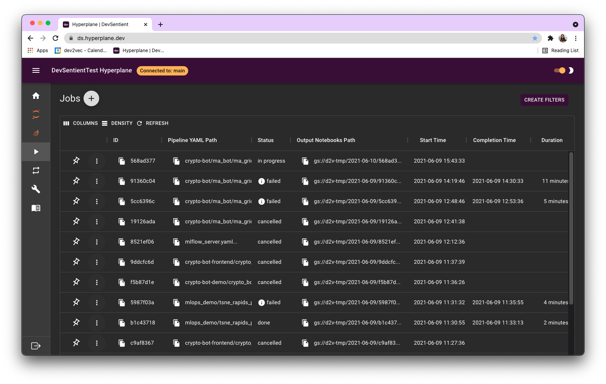
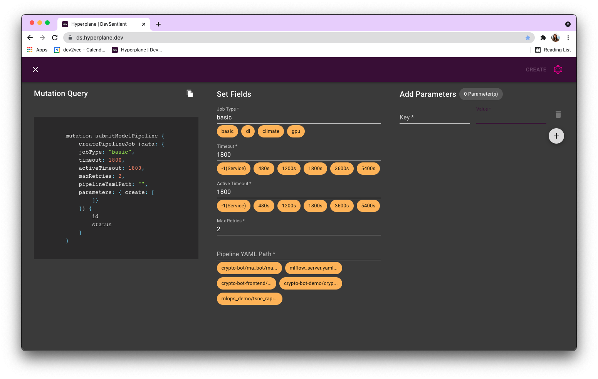

Create a pipeline¶
Pipelines are used to run a sequence of notebooks or python files from beginning to end. Hyperplane enables you to build pipelines from VSCode notebooks, python files, or Jupyter notebooks.
The main components of each pipeline are the steps, parameters, pipeline YAML, scheduling, saving files, timeouts, submitting and checking jobs with GraphQL, and the outputs.
1. Quick start¶
To start creating your pipeline with a pre-existing notebook, ensure your notebook can run from beginning to end without errors. Alternatively, if you are using the pipeline to debug your runs, you can skip this step.
2. Organize code into steps¶
Hyperplane pipelines enable you to run multiple python scripts and Jupyter notebooks in succession. We recommend separate long-running code into separate files and add them as separate steps in the YAML.
3. Pipeline yaml¶
Create a .yaml file to list your steps. You can start with adding the following template to example_pipeline.yaml:
pipeline:
name: "Example pipeline"
tasks:
- name: "First step"
type: "jupyter notebook"
notebook_path: "notebook_1.ipynb"
notebook_output_path: "notebook_1_output.ipynb"
- ...
You can replace the first step under tasks and add additional tasks following the same notation.
Add a Jupyter notebook step by adding the following block to your YAML file:
- name: "[your_step_name]"
type: "jupyter notebook"
notebook_path: "[notebook/path/relative/to/top/level/of/repo.ipynb]"
notebook_output_path: "[some/notebook_output_name.ipynb]"
Add a Python/VScode step by adding the following block to your YAML. The script should be runnable with python [py_path]:
- name: "[another_step_name]"
type: "vscode notebook"
py_path: "[py/file/relative/to/top/level/of/repo.py]"
Add a Javascript step by adding the following block to your YAML. The script should be runnable with node [js_path]:
- name: "[another_step_name]"
type: "js script"
js_path: "[js/file/relative/to/top/level/of/repo.js]"
Add a bash script step by adding the following block to your YAML. The bash script should be runnable with bash [bash_script_path]:
- name: "[another_step_name]"
type: "bash script"
bash_script_path: "[sh/file/relative/to/top/level/of/repo.sh]"
4. Parameters¶
Parameters are useful for experimentation, or when you want to run the same pipeline with different variables. For example, you may want to submit a query multiple times, with different values for your parameters each time.
mutation submitModel {
createPipelineJob (data: {
jobType: "basic",
pipelineYamlPath: "example_pipeline.yaml",
parameters: {create:
[
{key: "param1", value: "value1"}, ## change these for different experiments
]
}
}) {
id
runId
}
}
jupyter notebook step¶
To prepare your notebooks to receive parameters, tag the notebook cell containing replaceable variables with "parameters" using the cogs on the right.
Once you submit a query with the parameters field, the pipeline will insert an extra cell containing the parameter values from your job submission query.
For example, the job submission query above would insert a cell containing param1 = "value1" below the cell tagged with "parameters" in each notebook step in the example_pipeline.
other types of steps¶
In Python, Javascript, Bash, or other types of steps (including Jupyter notebooks), parameters can be accessed through environment variables. For example, using the job submission query above, one could access the new frequency parameter with the following line:
freq = os.environ.get('HYPERPLANE_JOB_PARAMETER_PARAM1') if os.environ.get('HYPERPLANE_JOB_PARAMETER_PARAM1') else 'value_x'
5. Scheduling chron jobs¶
You may schedule your pipeline to run on a schedule, using the schedule field in your query. The scheduling values can be set following standard chron expressions. See https://crontab.guru/ for examples.
The following GraphQL query will run the example_pipeline every 30 minutes.
mutation submitModel {
createPipelineJob (data: {
jobType: "basic",
schedule: "*/30 * * * *"
pipelineYamlPath: "example_pipeline.yaml",
}) {
id
runId
}
}
Note that jobType indicates the image for the job to run. For the complete list please visit the Image and jobTypes page.
6. Specifying timeouts¶
Shakudo Platform uses three types of timeouts to ensure your pipelines do not stall or run indefinitely.
mutation submitModel {
createPipelineJob (data: {
jobType: "basic",
timeout: %d, ## global timeout
activeTimeout: %d, ## active timeout
maxRetries: %d,
pipelineYamlPath: "example_pipeline.yaml",
}) {
id
runId
}
}
Global timeout¶
The global timeout is the maximum time that the pipeline may run, starting from the moment of job submission. Even if the job is never picked up (due to resource limits or task limits set by your admin team), it will throw a timeout error after this time is reached. Global timeout is set as part of the submission query using the timeout field.
Active timeout¶
The active timeout is maximum time that the pipeline may run once it is picked up. Regardless of whether steps remain to be completed, the pipeline will stop when this timeout is reached. Active timeout is set as part of the submission query using the activeTimeout field.
Step timeout¶
The step timeout is the amount of time each step can run before being stopped and restarted (for maxRetries number of times, set in the submission query). This value can be set for each step using the timeout value in each step of the pipeline YAML file.
For example, the following ensures that the step will not run for more than 120 seconds.
- name: "[your_step_name]"
type: "jupyter notebook"
notebook_path: "[notebook/path/relative/to/top/level/of/repo.ipynb]"
notebook_output_path: "[notebook_output_name].ipynb"
timeout: 120
maxRetries¶
maxRetries specifies the maximum number of attempts to run your pipeline job before returning an error, even if the timeouts are not reached.
7. Submit a job¶
Using GraphQL playground¶
Queries and mutations will autocomplete in the GraphQL playground. The query below can be copied and pasted into the GraphQL playground to create a job, provided that your pipelineYamlPath (relative to the top directory of your repo) exists and committed to the branch that's connected to Hyperplane. You can find which branch of the repository is connected to Shakudo Platform on the header of your Shakudo Platform dashboard it indicates which branch of your repository is connected to your Shakudo Platform
mutation {
createPipelineJob (data: {
jobType: "basic", ## corresponds to job_type from section 3
timeout: 1800, ## global timeout
pipelineYamlPath: "example_pipeline.yaml", ## path to your yaml
parameters: {create:
[
{key: "param1", value: "value1"}, ## change these for different experiments
]
}
}) {
id
runId
}
}
In a jhub notebook¶
Use the following inside a notebook cell or Python script to submit a job
gql_query = '''
mutation submitModel {
createPipelineJob (data: {
jobType: "basic",
timeout: %d,
activeTimeout: %d,
maxRetries: %d,
pipelineYamlPath: "example_pipeline.yaml",
parentJob: {connect: {id: "notebook"}},
parameters: {
create: [
{key: "model_of_interest", value: "%s"},
]
}
}) {
id
runId
}
}
''' % (timeout, a_timeout, \
max_retries, row.model_of_interest)
gql_queries = [gql_querie]
results = await nc.graphql_operation(gql_queries)
Using the dashboard¶
Go to the Jobs tab 
Add your YAML file, parameters, timeouts, and retries as normal. 
You can see how to create a pipeline in the this short video
8. Check on pipeline jobs¶
You can check your jobs using the Shakudo Platform dashboard, or with the following simple query in GraphQL playground:
query checkJob {
pipelineJob(where: {id: "your-job-id"}) {
id
status
startTime
outputNotebooksPath
statusReason
}
}
Pending: the job is waiting to be started
In progress: the job is running
Done: the job is finished
Any other status means the run was not successful; refer to the statusReason field to see why the pipeline job failed.
9. Outputs and debugging¶
You will notice that the status query above also returns an output path. Each Jupyter notebook step (including outputs from running the cells) will be stored at the value of outputNotebooksPath. You can download the notebook and run it on your Jupyter instance to debug if necessary. For Python/VSCode notebooks, all stdouts will also be saved in an output .txt file.
10. Other output options¶
Github image upload¶
If it is more convenient for your workflow, Shakudo Platform provides an example BASH script to upload graphs and other visual output directly to GitHub. It may be used as is or customized to your liking. See here for the relevant documentation.
Slack notification¶
Shakudo's Hyperplane Python package includes a function allowing jobs to post messages to your Slack channel. You can use this to notify you of finished jobs, or even to post job results. See here for the relevant documentation.
EventBridge¶
If you prefer to use Amazon EventBridge, we provide convenience functions at multiple levels of abstraction allowing you to easily forward data into that service ecosystem. See here for more information.